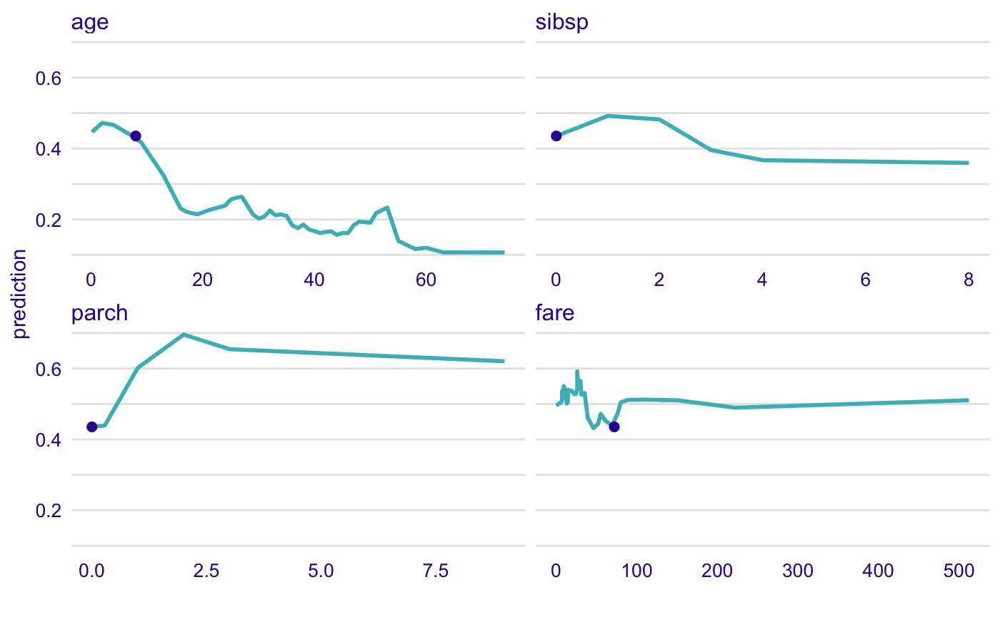
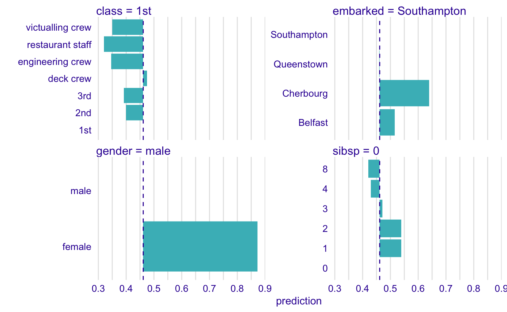
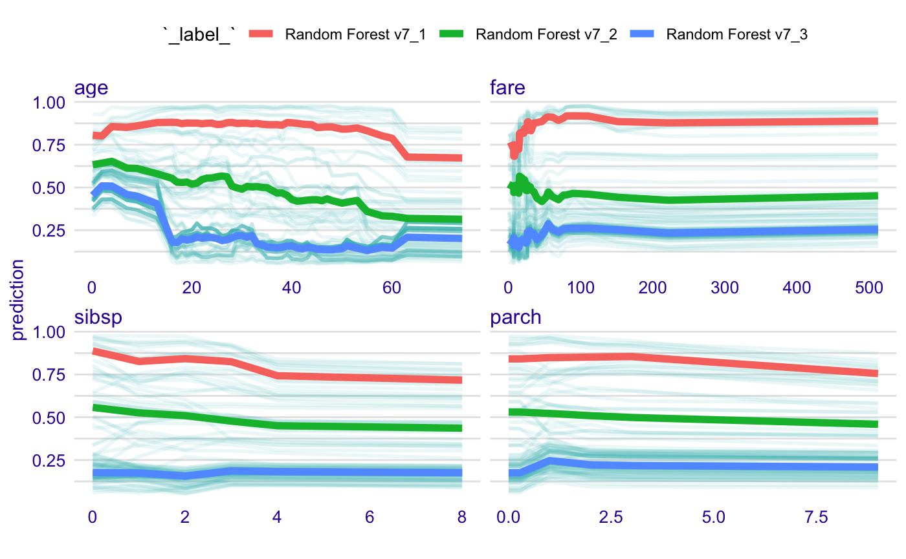

Survival on the RMS Titanic
Przemyslaw Biecek
2019-04-10
vignette_titanic.RmdData for Titanic survival
Let’s see an example for DALEX package for classification models for the survival problem for Titanic dataset. Here we are using a dataset titanic avaliable in teh DALEX package. Note that this data was copied from the stablelearner package.
#> gender age class embarked country fare sibsp parch survived
#> 1 male 42 3rd Southampton United States 7.11 0 0 no
#> 2 male 13 3rd Southampton United States 20.05 0 2 no
#> 3 male 16 3rd Southampton United States 20.05 1 1 no
#> 4 female 39 3rd Southampton England 20.05 1 1 yes
#> 5 female 16 3rd Southampton Norway 7.13 0 0 yes
#> 6 male 25 3rd Southampton United States 7.13 0 0 yesModel for Titanic survival
Ok, not it’s time to create a model. Let’s use the Random Forest model.
# prepare model
library("randomForest")
titanic <- na.omit(titanic)
model_titanic_rf <- randomForest(survived == "yes" ~ gender + age + class + embarked +
fare + sibsp + parch, data = titanic)
model_titanic_rf#>
#> Call:
#> randomForest(formula = survived == "yes" ~ gender + age + class + embarked + fare + sibsp + parch, data = titanic)
#> Type of random forest: regression
#> Number of trees: 500
#> No. of variables tried at each split: 2
#>
#> Mean of squared residuals: 0.1430269
#> % Var explained: 34.74Explainer for Titanic survival
The third step (it’s optional but useful) is to create a DALEX explainer for random forest model.
Model Level Feature Importance
Use the feature_importance() explainer to present importance of particular features. Note that type = "difference" normalizes dropouts, and now they all start in 0.
library("ingredients")
fi_rf <- feature_importance(explain_titanic_rf)
head(fi_rf)#> variable dropout_loss label
#> 1 _full_model_ 0.3333098 Random Forest v7
#> 2 country 0.3333098 Random Forest v7
#> 3 parch 0.3441013 Random Forest v7
#> 4 sibsp 0.3466654 Random Forest v7
#> 5 embarked 0.3490572 Random Forest v7
#> 6 fare 0.3718091 Random Forest v7plot(fi_rf)
Feature effects
As we see the most important feature is gender. Next three importnat features are class, age and fare. Let’s see the link between model response and these features.
Such univariate relation can be calculated with partial_dependency().
age
Kids 5 years old and younger have much higher survival probability.
Partial Dependency Profiles
pp_age <- partial_dependency(explain_titanic_rf, variables = c("age", "fare"))
head(pp_age)#> _vname_ _label_ _x_ _yhat_ _ids_
#> 1 fare Random Forest v7 0.0000000 0.3321788 0
#> 2 age Random Forest v7 0.1666667 0.5330091 0
#> 3 age Random Forest v7 2.0000000 0.5558881 0
#> 4 age Random Forest v7 4.0000000 0.5563107 0
#> 5 fare Random Forest v7 6.1904000 0.3125061 0
#> 6 age Random Forest v7 7.0000000 0.5323375 0plot(pp_age)
Conditional Dependency Profiles
cp_age <- conditional_dependency(explain_titanic_rf, variables = c("age", "fare"))
plot(cp_age)
Accumulated Local Effect Profiles
ap_age <- accumulated_dependency(explain_titanic_rf, variables = c("age", "fare"))
plot(ap_age)
Instance level explanations
Let’s see break down explanation for model predictions for 8 years old male from 1st class that embarked from port C.
First Ceteris Paribus Profiles for numerical variables
new_passanger <- data.frame(
class = factor("1st", levels = c("1st", "2nd", "3rd", "deck crew", "engineering crew", "restaurant staff", "victualling crew")),
gender = factor("male", levels = c("female", "male")),
age = 8,
sibsp = 0,
parch = 0,
fare = 72,
embarked = factor("Southampton", levels = c("Belfast", "Cherbourg", "Queenstown", "Southampton"))
)
sp_rf <- ceteris_paribus(explain_titanic_rf, new_passanger)
plot(sp_rf) +
show_observations(sp_rf)
And for selected categorical variables. Note, that sibsp is numerical but here is presented as a categorical variable.

It looks like the most important feature for this passenger is age and sex. After all his odds for survival are higher than for the average passenger. Mainly because of the young age and despite of being a male.
Profile clustering
passangers <- select_sample(titanic, n = 100)
sp_rf <- ceteris_paribus(explain_titanic_rf, passangers)
clust_rf <- cluster_profiles(sp_rf, k = 3)
head(clust_rf)#> _vname_ _label_ _x_ _cluster_ _yhat_ _ids_
#> 1 fare Random Forest v7_1 0.0000000 1 0.7538242 0
#> 2 sibsp Random Forest v7_1 0.0000000 1 0.8920322 0
#> 3 parch Random Forest v7_1 0.0000000 1 0.8455559 0
#> 4 age Random Forest v7_1 0.1666667 1 0.8202474 0
#> 5 parch Random Forest v7_1 0.2800000 1 0.8464789 0
#> 6 sibsp Random Forest v7_1 1.0000000 1 0.8310824 0plot(sp_rf, alpha = 0.1) +
show_aggreagated_profiles(clust_rf, color = "_label_", size = 2)
Session info
#> R version 3.5.3 (2019-03-11)
#> Platform: x86_64-pc-linux-gnu (64-bit)
#> Running under: Ubuntu 18.04.2 LTS
#>
#> Matrix products: default
#> BLAS: /usr/lib/x86_64-linux-gnu/blas/libblas.so.3.7.1
#> LAPACK: /usr/lib/x86_64-linux-gnu/lapack/liblapack.so.3.7.1
#>
#> locale:
#> [1] LC_CTYPE=en_US.UTF-8 LC_NUMERIC=C
#> [3] LC_TIME=en_US.UTF-8 LC_COLLATE=en_US.UTF-8
#> [5] LC_MONETARY=en_US.UTF-8 LC_MESSAGES=en_US.UTF-8
#> [7] LC_PAPER=en_US.UTF-8 LC_NAME=C
#> [9] LC_ADDRESS=C LC_TELEPHONE=C
#> [11] LC_MEASUREMENT=en_US.UTF-8 LC_IDENTIFICATION=C
#>
#> attached base packages:
#> [1] stats graphics grDevices utils datasets methods base
#>
#> other attached packages:
#> [1] r2d3_0.2.3 ingredients_0.3.2 randomForest_4.6-14
#> [4] DALEX_0.3.1
#>
#> loaded via a namespace (and not attached):
#> [1] Rcpp_1.0.1 compiler_3.5.3 pillar_1.3.1 plyr_1.8.4
#> [5] tools_3.5.3 digest_0.6.18 jsonlite_1.6 evaluate_0.13
#> [9] memoise_1.1.0 tibble_2.1.1 gtable_0.3.0 pkgconfig_2.0.2
#> [13] rlang_0.3.4 rstudioapi_0.9.0 commonmark_1.7 yaml_2.2.0
#> [17] pkgdown_1.3.0 xfun_0.5 stringr_1.4.0 dplyr_0.8.0.1
#> [21] roxygen2_6.1.1 xml2_1.2.0 knitr_1.22 htmlwidgets_1.3
#> [25] desc_1.2.0 fs_1.2.6 rprojroot_1.3-2 grid_3.5.3
#> [29] tidyselect_0.2.5 glue_1.3.1 R6_2.4.0 rmarkdown_1.12
#> [33] ggplot2_3.1.1 purrr_0.3.2 magrittr_1.5 backports_1.1.3
#> [37] scales_1.0.0 htmltools_0.3.6 MASS_7.3-51.1 assertthat_0.2.1
#> [41] colorspace_1.4-1 labeling_0.3 stringi_1.4.3 lazyeval_0.2.2
#> [45] munsell_0.5.0 crayon_1.3.4